Investigadores del CEAL
|
 |
Raymundo Forradellas, PhD
Investigador
Director del CEAL (Centro de Etudios y
Aplicaciones Logísticas)
Director Maestría en Logística (Fac.
de
Ingeniería,UNCuyo)
Secretario de Ciencia,
Técnica y Posgrado (Fac. de Ing.,UNCuyo)
Profesor Titular, Departamento de Ingeniería Industrial (UNCuyo)
|
| 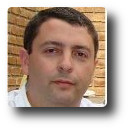 |
Hugo Tapia
Ingeniero Civil. Magister en Logística (FI-UNCuyo-Arg.)
“Formation Supérieure en Management Logistique” (ESIDEC-Metz-Francia).
“Specialization in Project Management” (University of San Francisco, USA).
Certificado como PMP (desde 2009 –PMI-USA). Actualmente es estudiante del Doctorado en Ingeniería Industrial de FI UNCuyo Arg. Formado también en innovació, calidad, emprendedorismo y habilidades directivas.
Profesor MBA
(Fac. de Ciencias Económicas, UNCuyo)
Colabora en el CEAL como: Scrum Green Belt Master y Lider de Proyecto
|
| 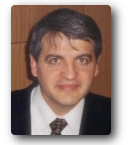 |
Ricardo Palma, PhD
Investigador
Doctor en Ingeniería
Ingeniero Industrial - Master en Logística
Profesor Titular, Departamento de Ingeniería Industrial
Facultad de Ingeniería, Universidad Nacional de Cuyo
Colabora en el CEAL en temas de: Logística para mitigación de catastrofes naturales,
Resiliencia de Infraestructura Logística, Manejo de Misiones Críticas
|
| 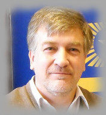 |
Gustavo A. Masera, PhD
Investigador
Doctor Geopolítica e Historia del Pensamiento Económico
Profesor Titular, Departamento de Ingeniería Industrial
Facultad de Ingeniería, Universidad Nacional de Cuyo
|
| 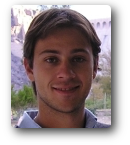 |
Martín Marchetta, PhD
Investigador
Doctor en Ingeniería (UNCuyo)
Master Design
Global mention RICI (INPL, Nancy, Francia)
Ingeniero en Sistemas de Información (UTN)
Profesor, Departamento de
Ingeniería Industrial
Facultad de Ingeniería, Universidad Nacional de Cuyo
|
 |
Fernanda Garcia
Investigadora
Master en Logística (UNCuyo)
Master Design
Global mention RICI (INPL, Nancy, Francia)
Ingeniera en Sistemas de Información
Profesora Maestría en Logística (Facultad de Ingeniería, UNCuyo)
Profesora MBA (Facultad de Ciencias Económicas, UNCuyo)
|
| 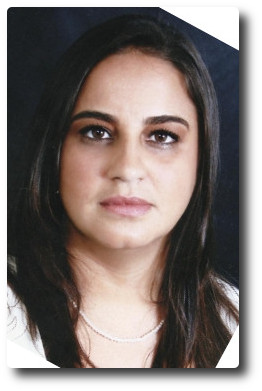 |
Renata Quemel Pieres
Directora Académica y Ejecutiva del CEALMA - Brasil
Egresada Maestría en Logística (UNCuyo)
Operadora del Fab-Lab Logistico de Belem de Pará Link al Spin Off
|
| 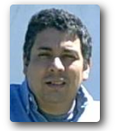 |
Daniel Díaz Araya
Investigador
Licenciado en Sistemas de Información
Estudiante de Doctorado en en Ciencias de la
Computación (UNICEN, Beca CONICET)
Estudiante Maestría en Logística (UNCuyo)
Profesor (Facultad de Ingeniería, Universidad Nacional de
San Juan)
|
|
Claudia Sosa
Investigadora
Licenciada en Comercio Exterior
Estudiante
Maestría en Logística (UNCuyo)
|
| 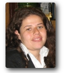 |
Carolina Vargas
Investigadora
Ingeniera Industrial
Estudiante
de la
Maestría en Logística (UNCuyo)
|
| 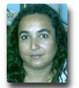 |
Sandra Oviedo
Investigadora
Licenciada en Sistemas de Información
Estudiante de la Maestría en Logística (UNCuyo)
|
|
|
Consultores Asociados
|
|
Alfonso
Gambino Tramuta
Ingeniero en Electrónica.
Ingeniero Laboral.
Ingeniero Organizacional, (Pensilvania, USA).
Maestría en Administración (Pensilvania, USA).
Maestría en Logística (California, USA).
Especialización en Gestión Ambiental, (California, USA).
Especialización en Proyectos de Inversión, (Universidad
de Chile).
Profesor Maestría en Logística (UNCuyo).
Asesor de Gestión Logística (Hº
Cámara Senadores de la Nación).
Coordinador del Grupo Estrategias Logísticas de los Puertos del
Litoral Argentino.
Coordinador General de Gestión Eficiente de la Energía
(UTN).
Investigador grupo DIOCMA: Desarrollo e innovación para la
obtención de combustibles por métodos alternativos (UTN).
Investigador proyecto TELUES, Técnicas Lumínicas de
Estado Sólido. Programa Uso Racional de la Energía (UTN).
Ejecutivo del Grupo Consultor Marketing Tecnológico.
|
| 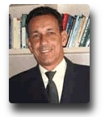 |
Darli Rodrigues
Vieira, PhD
Profesor
Universidad Federal do Paraná (UFPR, Brasil)
Profesor MBA en Administración de Sistemas Logísticos
Profesor en programas de posgrado (Fundación Dom Cabral)
Profesor visitante, Laval University (Canada)
Profesor visitante, Université
de Sorbonne (Francia)
Fundador y ex-presidente de ABGP
(Asociação Brasileira de Gerenciamiento de Projectos)
|
| 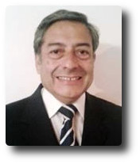 |
Eduardo Cantos Cornejo
Ingeniero
en Petróleos - Master en Administración de Negocios
Gerente de Operaciones en Diversas Empresas de Transporte Rodoviario
Colabora con el ceal en: Fleet Management , Seguridad y reducción de Incidentes y Accidentes en Flotas y Almacenes
Profesor MBA
(Fac. de Ciencias Económicas, UNCuyo)
|
| 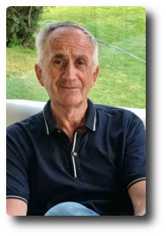 |
Eduardo Muńiz
Ingeniero en Direccion de Empresas (UNIVERSIDAD J A MAZA)
Matriculado en consejo profesional ingenieros industriales BS AS matricula 1600
Actividad docente: Profesor de la Universidad de Mendoza. Facultad de Ingeniería
Gerente Comercial de Austral Lineas Aereas en sucursales de Comodoro Rivadavia/ Junin (Prov bs as) y Rosario ( santa Fe)
Subgerente comercial de Bs As ( capital federal)
Responsable de normas y procedimientos en José Cartellone Construc Civiles SA.
Jefe de evaluación de proyecto Aceros cartellone
Jefe de proyectos en temas de tecnología en ICSA/ IMPSA .
Jefe de Planificación y Logística de BAP Ferrocarriles
Profesor MBA
(Fac. de Ciencias Económicas, UNCuyo)
|
| 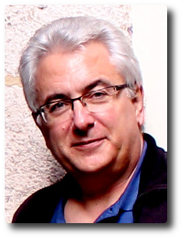 |
Nicolas Barube PhD.
Drector Delegado de Investigaciones ISEL , encargado de Relaciones Internacionales Universidad de Le Havre - Francia
Colaboradoe del CEAL en temas Logistica Portuaria y Gestión Naviera
|
| 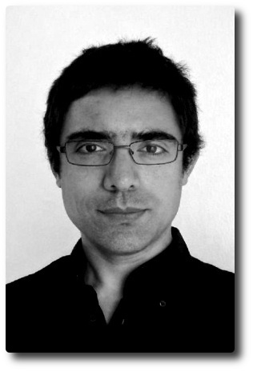 |
Ciro Pennisi
Ingeniero Civil - Esp. En Canales Caminos y Puertos Universidad Politécnica de Cataluńa
Colaborador del CEAL en temas de Desarrollo Territorial Urbano y Transporte Público
|
| 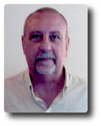 |
Enzo Giorgis
Lienciado en Comercio Internacional
- Master en Logística
Profesor
(Gestion Logística de Flotas)
|
| 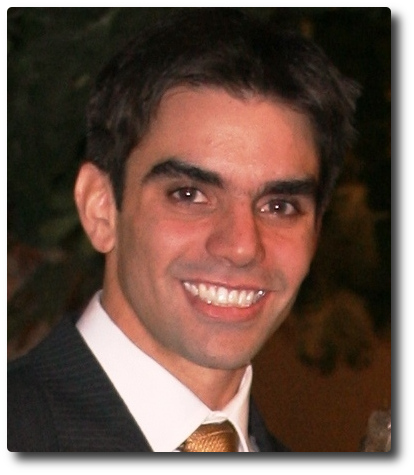 |
Antonio Mangione
Ingeniero Industrial
- Master en Logística
Profesor Maestria en Logistica;
(Logistica Inversa - Green Logistica)
|